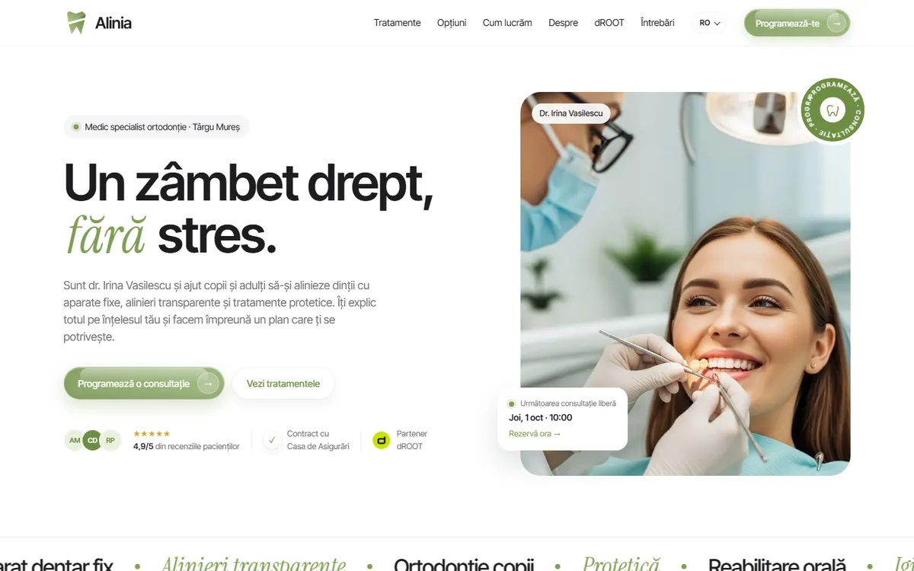
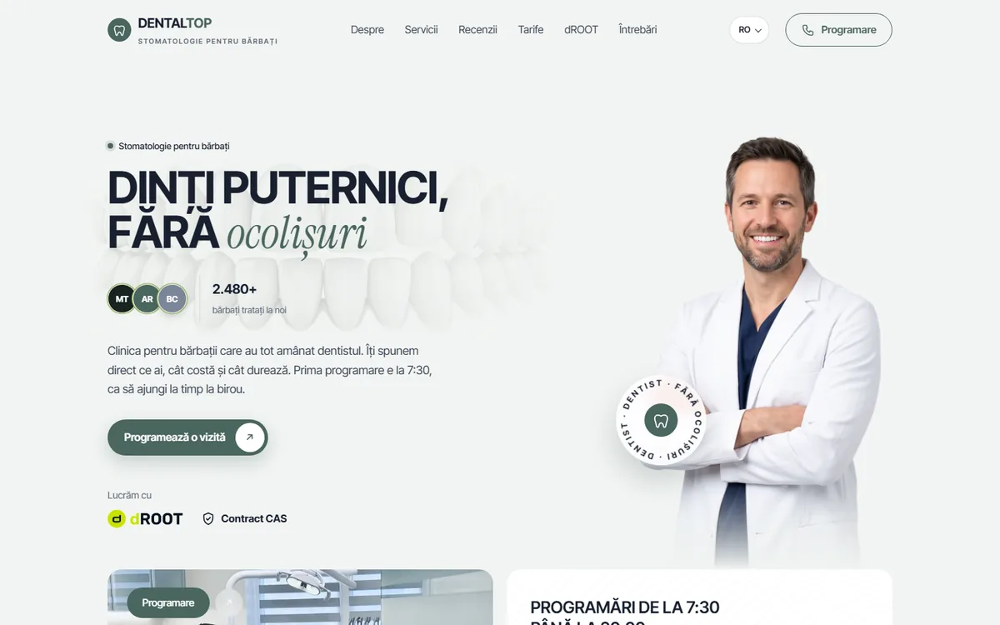
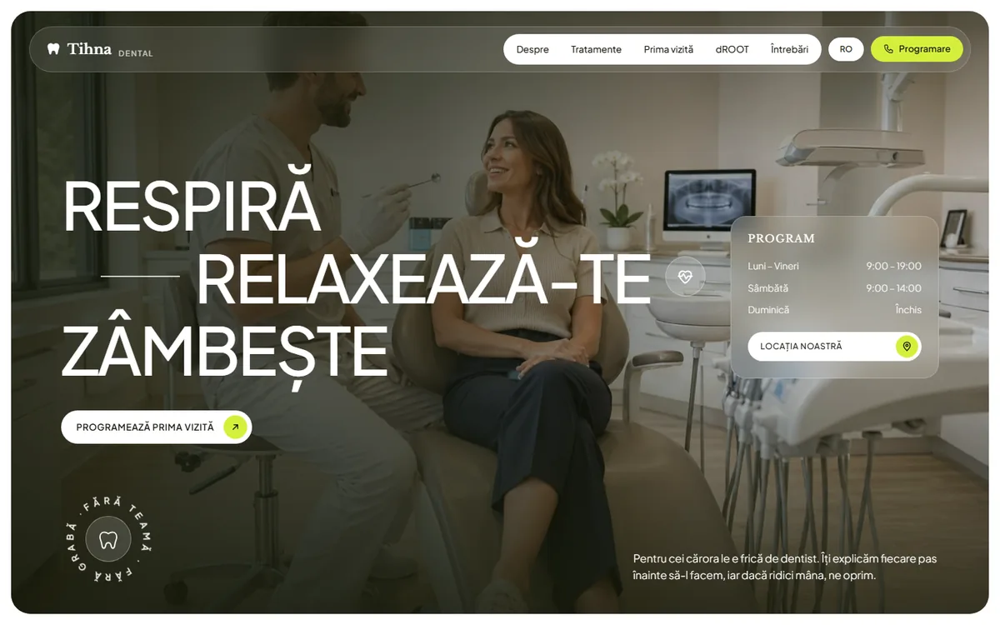
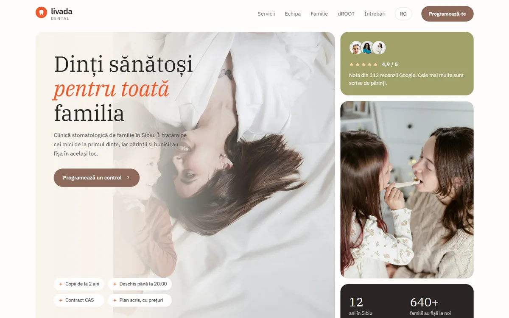
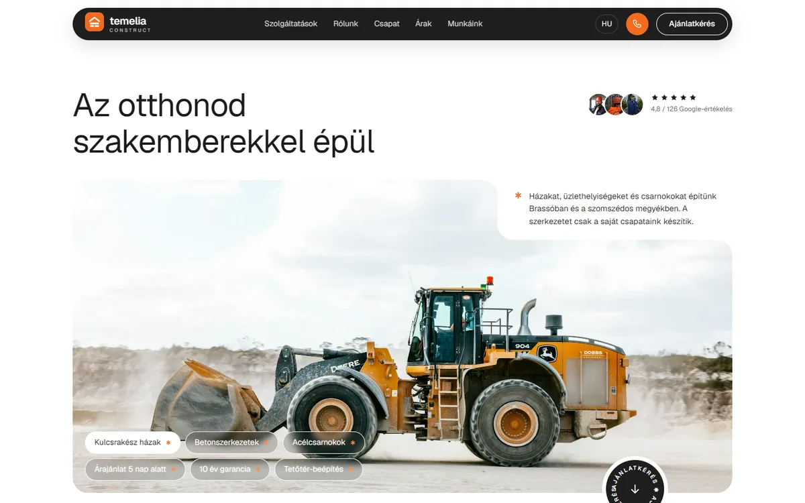
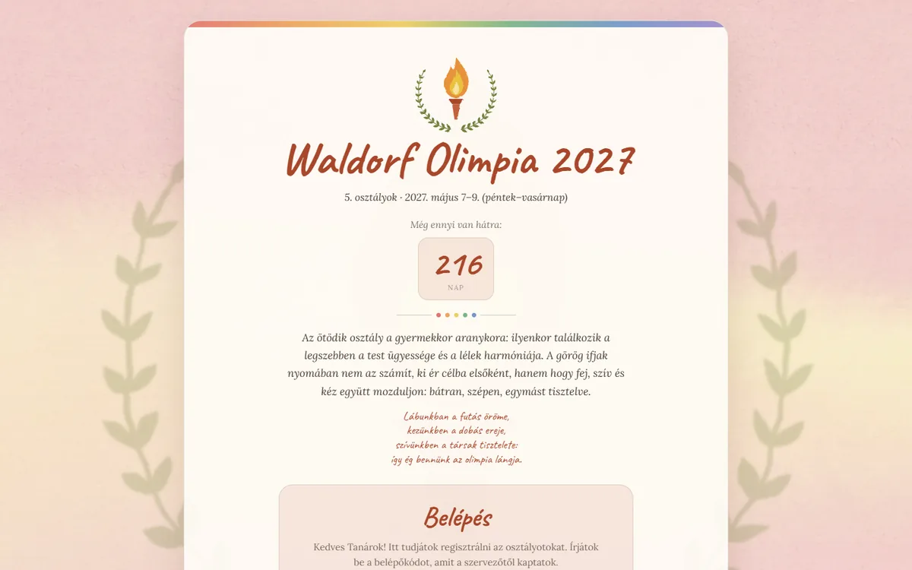

Digitális munkák · Webdesign
Webdesign és digitális felületek
Design, amely az első kattintástól az utolsó lépésig működik. A vizuális ritmust, a világos hierarchiát és az emberközpontú gondolkodást ötvözöm, hogy a felületek természetesek és megkülönböztethetők legyenek.
← Vissza a digitális kategóriákhoz




Webalkalmazás
Waldorf Olimpia 2027
Regisztrációs oldal öt város 5. osztályának. Akvarell háttér, közösen szerkeszthető osztálylisták, programterv és szobabeosztás.